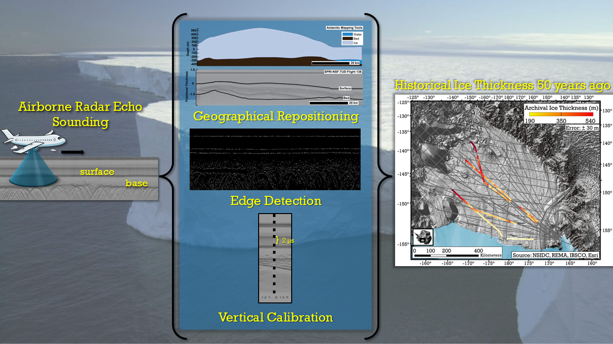

Visualizing Geophysical Discoveries Through Geospatial Techniques
About Me
My journey in geophysics began with the NSF-funded GeoPATHS Program, a transformative experience that exposed me to various geophysical methods such as seismic refraction, electrical resistivity, and Ground Penetrating Radar (GPR). This two-week summer program at Garner Run Catena of the Susquehanna Shale Hills Critical Zone Observatory inspired me to major in Earth Sciences. It demonstrated how geophysical tools can enhance our understanding of geological phenomena and ignited my passion for using these methods to benefit communities.
Figure 1: Potential burials at Mt. Tabor Cemetery based on GPR surveys.
For my undergraduate senior thesis, I decided to use my knowledge in geophysics to conduct a GPR grid survey to visualize unmarked African American burials by processing radar data through MATLAB and georeferencing observations in ArcGIS Pro at Mount Tabor Cemetery in Mount Holly Springs, PA. Overall, I found 51 unmarked burials by interpolating the location of anomalies through ordinary kriging. Being able to use geophysics to connect a historical site with the community of Mount Holly Springs proved to me that I could use geophysics to help communities.
My interest in science and community outreach deepened during my participation in Dickinson College’s Arctic and Alpine Climate Change Research Program in Grise Fiord, Nunavut Territory, Canada. Engaging with the Inuit people, I learned about the tangible impacts of climate change on their lives, including land subsidence and the relocation of airplane runways due to permafrost degradation. This experience emphasized the challenges faced by underrepresented communities and strengthened my resolve to address climate change impacts through my work.
Furthering my research, I joined Stanford Earth’s Summer Undergraduate Research in Geosciences and Engineering (SURGE) Program, where I worked with Dr. Dustin M. Schroeder and Dr. Mickey MacKie on analyzing archival airborne radar sounding data from East Antarctica. Comparing this data with modern observations from NASA/NSF Operation IceBridge revealed significant changes in glaciers over 43 years. This experience provided me with a robust foundation in using radar observations to assess subglacial evolution on a multi-decadal scale and demonstrated the potential of geophysical methods to advance our understanding of climate change.
As a Ph.D. candidate focusing on airborne radar sounding data, my goal is to contribute to the study of subglacial evolution in Antarctica. Under the guidance of Dr. Winnie Chu, an expert in radar sounding data from NASA/NSF OIB and SPRI-NSF-TUD, I aim to assess the stability of the Antarctic Ice Sheet and Ice Shelves. My pursuit of a Ph.D. is driven not only by my curiosity and passion for geophysics but also by my commitment to helping communities understand and address climate change through scientific research.
Research

Figure 2: Workflow for processing and extracting ice thickness for the SPRI-NSF-TUD Campaign.
I am working with historic airborne radar data from the 1974-75 joint campaign by the Scott Polar Research Institute (SPRI), National Science Foundation (NSF), and the Technical University of Denmark (TUD). Unlike modern airborne radar dataset, the SPRI-NSF-TUD radargrams require detailed geographical repositioning, manual picking of surface and bed features based on edge detection, and vertical calibration. This dataset holds untapped potential for understanding historic ice thickness, surface, and bed features beneath Ross Ice Shelf.
Alongside radargrams, the historical dataset from the 1974-75 includes A-scopes and ESM records - datasets that measure radar reflectivity and bed structure. My goal is to develop calibration techniques for these records, like the methods i am using for historical radargrams. By bringing this archival data up to modern standards, I aim to unlock its full potential, revealing new insights into Ross Ice Shelf's past.
Papers
Manuscript Under Preparation
Tarzona, A., Chu, W., Amaro, B., Schroeder, D. M., Siegfried, M., and Altaweel, A. (2025). Echoes from the past: Techniques for extracting historical airborne radar observations from the Ross Ice Shelf. Journal of Glaciology. Manuscript in preparation.
Tarzona, A., Chu, W., Schroeder, D. M., Siegfried, M., and Yin, R. (2025). Frozen in time: Radiometric calibration of archival radar echoes at Ross Ice Shelf. Journal of Glaciology. Manuscript in preparation.
Tarzona, A., J. L. Hayes, L. Varner. Using Ground Penetrating Radar and Drone Imagery to Visualize Lost Gravesites at Mount Tabor Cemetery, Mount Holly Springs, PA. (2021), Journal of Archeological Science: Reports. Manuscript in preparation.
Published
Karlsson, N. B., Schroeder, D. M., Sørensen, L. S., Chu, W., Dall, J., Andersen, N. H., Dobson, R., Mackie, E. J., Köhn, S. J., Steinmetz, J. E., Tarzona, A., Teisberg, T. O., and Skou, N.: A Newly Digitised Ice-penetrating Radar Data Set Acquired over the Greenland Ice Sheet in 1971–1979, Earth Syst. Sci. Data Discuss. [preprint], https://doi.org/10.5194/essd-2023-442, in review, 2024.
Schroeder, D. M., A. L. Broome, A. Conger, A. Lynch, E. J. Mackie, and A. Tarzona. (2021), Radiometric analysis of digitized Z-scope records in archival radar sounding film, Journal of Glaciology, 1–8, doi:10.1017/jog.2021.130.
Field Work
Geophysical Field Methods Field Work, GSSI 3000 Ground Penetrating Radar, Zzyzx, CA, USA — Spring 2024
Helheim Glacier Field Work, ApRES Recovery, Greenland — Summer 2023
Geophysical Field Methods Field Work, GSSI 3000 Ground Penetrating Radar, Zzyzx, CA, USA — Spring 2022
Mt. Tabor Historic Cemetery Field Work, Pulse EKKO Ground Penetrating Radar, Mt. Tabor, PA, USA — Spring 2021
Fort Halifax Archeology Field Work, Pulse EKKO Ground Penetrating Radar, Ft. Halifax, PA, USA — Spring 2021
Arctic and Alpine Research Experience, Water Quality Specialist, Grise Fiord, NU, CAN — Summer 2019
Interactive Maps
I’m a science communicator at heart! I created interactive Tableau maps that visualize global earthquakes and hurricane landfalls across the Americas and Caribbean, making complex data engaging and easy to understand.
Interactive Tableau Map: Global EarthquakesInteractive Tableau Map: Hurricane Landfalls
Mentorship
Current Student(s) Rebecca Yin, Woodward Academy, GA
- Currently working on creating an information hub to identify calibration pips for A-scope and Z-scopes of archival data.
Alumni
Abdullah Altaweel - Georgia Institute of Technology, Computer Science (2022-2023)
Aadhav Prabu - Stanford University, Computer Science (2022)
Brian Amaro - Stanford University, Computer Science (2022)
Laila Combs - Houston Community College (2022)
MiKayla Pascual - University of Texas at Austin, (2022, Asian American and Pacific Islanders in Geosciences)
Kiera Tran - Georgia Institute of Technology, Earth and Atmospheric Sciences (2021)